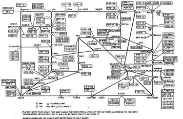
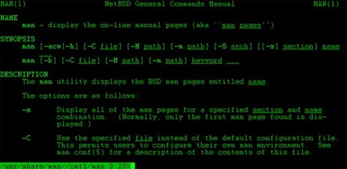
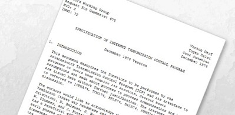

The History of the Internet
The Internet has largely incorporated into daily life. The Internet has become an essential part of our
daily routines, from looking up dinner recipes to purchasing new bedroom accessories and viewing
our favourite shows. However, it wasn't always as polished as it is now. The history of the Internet is
a detailed and convoluted progression that produced the Internet as we know it today.
- 1969: Arpanet
-

When packet switching technology first became available, Arpanet was the first actual
network to use it. Stanford University and UCLA connected their computers for the first time
on October 29, 1969. They were essentially the first hosts on the future Internet. Although
the link between the two colleges purportedly collapsed on the letter "g," the first message
transmitted over the network was intended to be "Login."
- 1969: Unix
-

Another significant event that occurred in the 1960s was the creation of Unix, an operating
system whose architecture had a significant impact on that of Linux and FreeBSD, the two
most common operating systems used today in web servers and web hosting services
- 1970: Arpanet Network
-
In 1970, BBN (the business that produced the "interface message processor" computers
needed to connect to the network) formed an Arpanet network with Harvard, MIT, and
other institutions.
- 1971: Email
-
Ray Tomlinson developed email in 1971. He also decided to use the "@" symbol to
differentiate the username from the machine name (which subsequently evolved into the
domain name).
- 1971: Project Gutenberg and eBook
-
Starting Project Gutenberg was one of the year's most notable developments. For those who
are not aware with the website, Project Gutenberg is an international initiative to make
books and papers in the public domain available electronically for free in a range of eBook
and electronic formats. It all started when Michael Hart had access to a significant amount
of computing time and realized that the future of computers lay not in computation but
rather in the archiving, retrieval, and searching of knowledge that, at the time, was only
available in libraries. He began Project Gutenberg to make knowledge found in books
broadly accessible in electronic form, physically typing the "Declaration of Independence"
(OCR wasn't available at the time). The eBook was born as a result of this
- 1972: CYCLADES
-
In 1972, CYCLADES, a project similar to Arpanet, was launched in France. Despite Cyclades'
eventual demise, it did give rise to a crucial concept: data transmission should be handled by
the host computer rather than the network itself
- 1973: The first trans-Atlantic connection and the popularity of emailing
-
In 1973, Arpanet established its first transatlantic connection with the University College of
London. Email constituted 75% of all Arpanet network activity during the same time period.
- 1974: The beginning of TCP/IP
-

The year 1974 saw significant progress. A plan to connect Arpa-like networks into an
ungoverned "inter-network" that revolved around a transmission control protocol (which
subsequently became TCP/IP) was released.